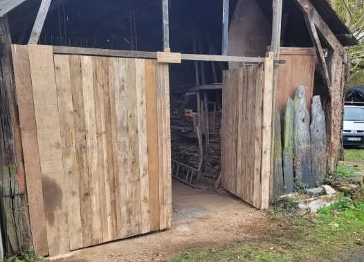
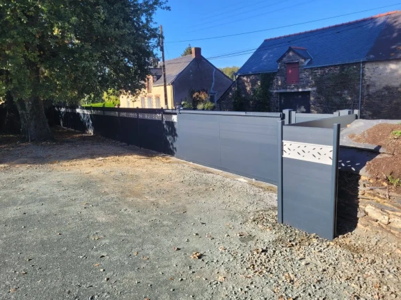
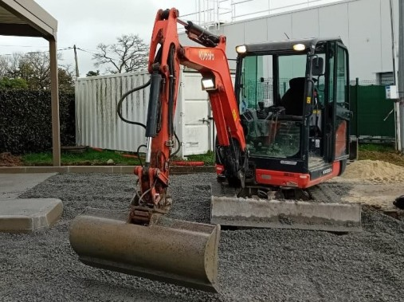

Maçonnerie
Dalles en béton, murets, enduits et terrasses réalisés proprement, pour des constructions solides et durables.
Finitions soignées, sans garantie décennale.
Exemple: dalle pour abri de jardin.
Travaux multiservices


Petits travaux
Constructions en bois, nettoyage de façades et bricolages divers, réalisés proprement et efficacement.
Pas de plomberie/ électricité.
Exemple : abri vélo ou terrasse bois.
Constructions en bois, nettoyage de façades et bricolages divers, réalisés proprement et efficacement.
Pas de plomberie/ électricité.
Exemple : abri vélo ou terrasse bois.

Espaces verts
Tonte, taille de haie avec évacuation, débroussaillage pour un jardin propre et agréable à vivre.
35€/h TTC
Exemple : remise en état avant la vente d'une maison
Tonte, taille de haie avec évacuation, débroussaillage pour un jardin propre et agréable à vivre.
35€/h TTC
Exemple : remise en état avant la vente d'une maison

Aménagement extérieur
Pose de portail, clôture et autres aménagements pour sécuriser et/ou embellir votre jardin.
Pose rapide, adaptée à votre terrain.
Exemple : portail coulissant pour accès facile.
Pose de portail, clôture et autres aménagements pour sécuriser et/ou embellir votre jardin.
Pose rapide, adaptée à votre terrain.
Exemple : portail coulissant pour accès facile.

Mini-pelle
Terrassement, empierrement, tranchées à Massérac et alentours, pour préparer vos sols et aménagements extérieurs avec soin et précision.
Chantier propre, sans engorgement.
Exemple : tranchée pour câble enterré.
Terrassement, empierrement, tranchées à Massérac et alentours, pour préparer vos sols et aménagements extérieurs avec soin et précision.
Chantier propre, sans engorgement.
Exemple : tranchée pour câble enterré.
Tarifs à partir de 35€/h
Les prestations Espaces verts sont facturées 35€/h.
Pour tout le reste, les tarifs varient en fonction du projet et de vos besoins spécifiques : chaque intervention est unique, et je m'engage à vous fournir un devis clair et adapté, selon :
- La complexité du travail, le temps nécessaire et les outils spécifiques
- Le volume ou la surface à traiter
- Le type d'équipement ou de matériaux nécessaires
- La localisation ou l'accessibilité du chantier
Le règlement en CESU préfinancé est possible pour les prestations Espaces Verts et pour les petits bricolages élémentaires.
Demandez votre devis gratuit
Paiement possible en CESU préfinancés selon prestations

Pourquoi faire appel à un artisan multiservices à Massérac ou près de Redon?

Confiance et fiabilité
Un seul interlocuteur de confiance, fiable et sérieux.
Je m'occupe de tout, pour que vos travaux se déroulent sans stress.
Un seul interlocuteur de confiance, fiable et sérieux.
Je m'occupe de tout, pour que vos travaux se déroulent sans stress.

Polyvalence
Une large gamme de services, tout en intervenant uniquement sur des travaux que je maîtrise parfaitement.
Une large gamme de services, tout en intervenant uniquement sur des travaux que je maîtrise parfaitement.

Soin et qualité
Des prestations réalisées dans les règles de l'art, du petit bricolage aux aménagements extérieurs.
Des prestations réalisées dans les règles de l'art, du petit bricolage aux aménagements extérieurs.
Proximité et réactivité
Un artisan local, proche de vous, disponible à Massérac et dans un rayon de 30km.
Un artisan local, proche de vous, disponible à Massérac et dans un rayon de 30km.
Mes réalisations
Découvrez mes travaux à Massérac et autour de Redon.